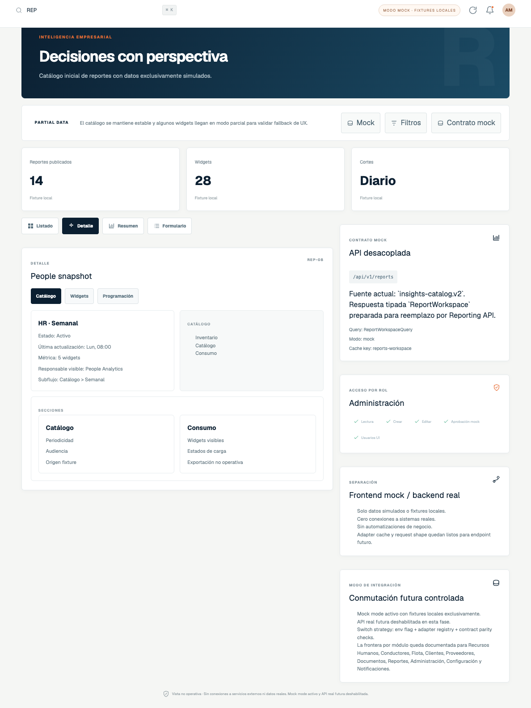
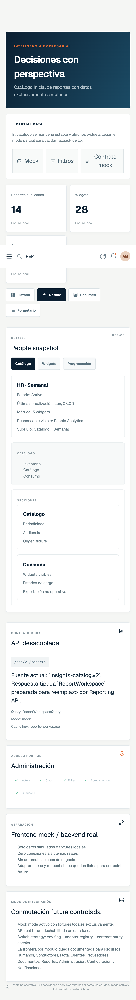
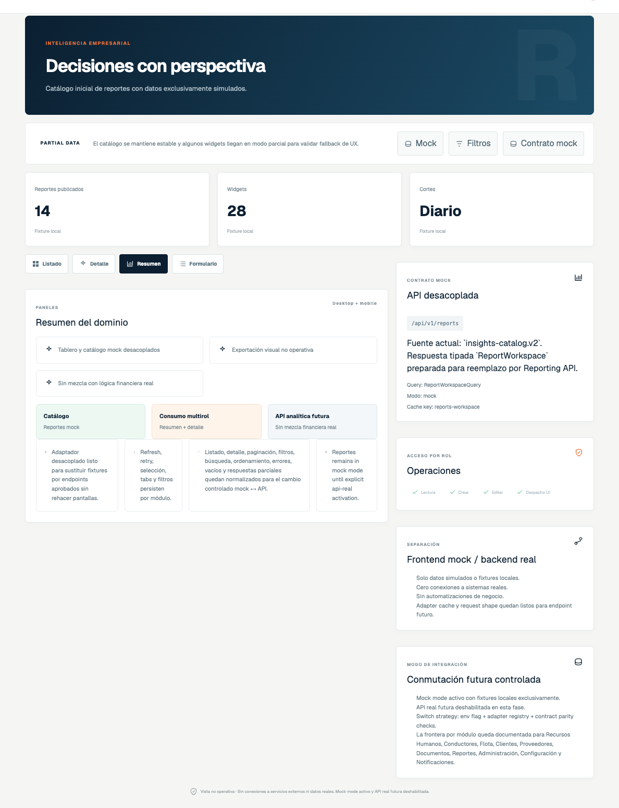
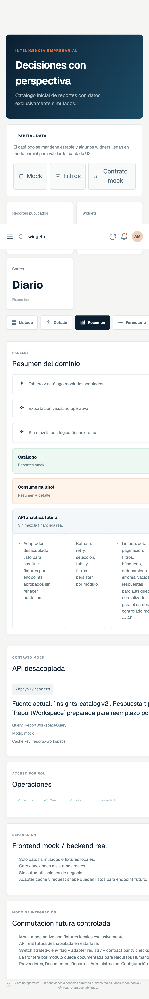
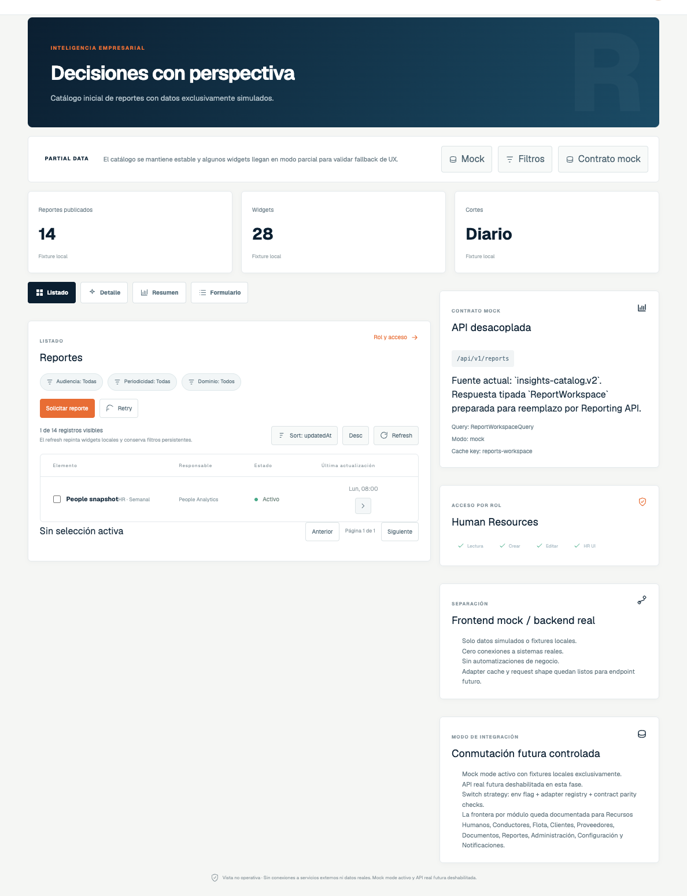
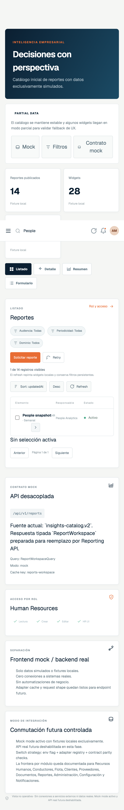
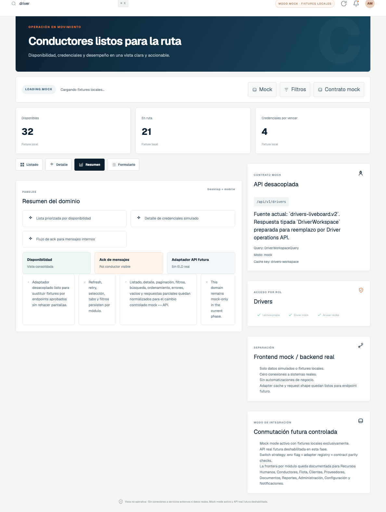
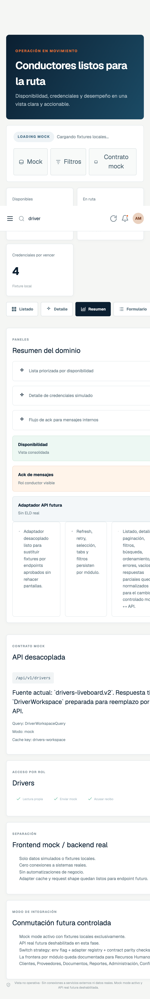
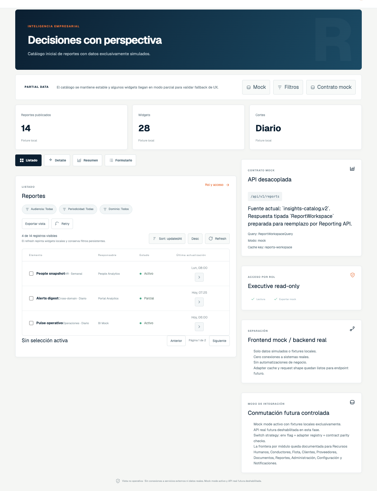
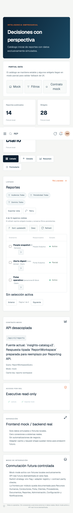

02A.12 visual evidence
Role-based portal captures
Desktop and mobile screenshot pack generated from the approved mock portal baseline on July 27, 2026. `Reportes` is captured for authorized roles; `Driver` evidence remains on an allowed driver-visible route to preserve the approved navigation boundary.
Admin
Full mock visibility on `Reportes` with detail-oriented evidence.
Desktop

Mobile

Ops
Operational read path with summary-oriented `Reportes` evidence.
Desktop

Mobile

HR
List-oriented `Reportes` evidence under partial-state mock behavior.
Desktop

Mobile

Driver
Allowed driver route only, confirming the protected absence of `Reportes`.
Desktop

Mobile

Executive
Read-only `Reportes` evidence with visual export affordance only.
Desktop

Mobile
